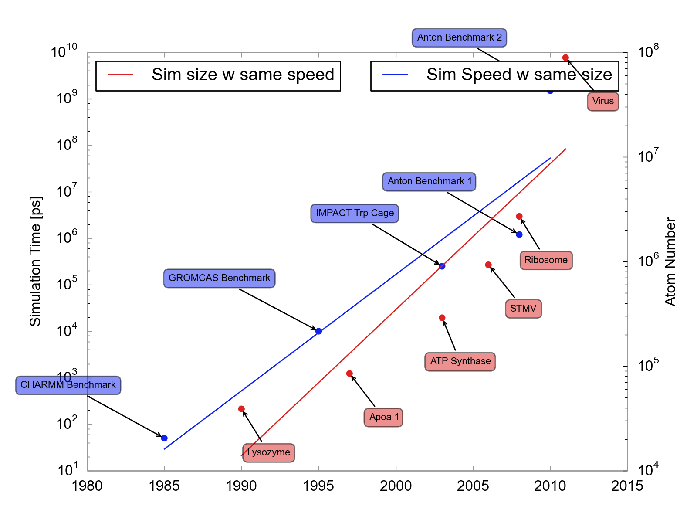
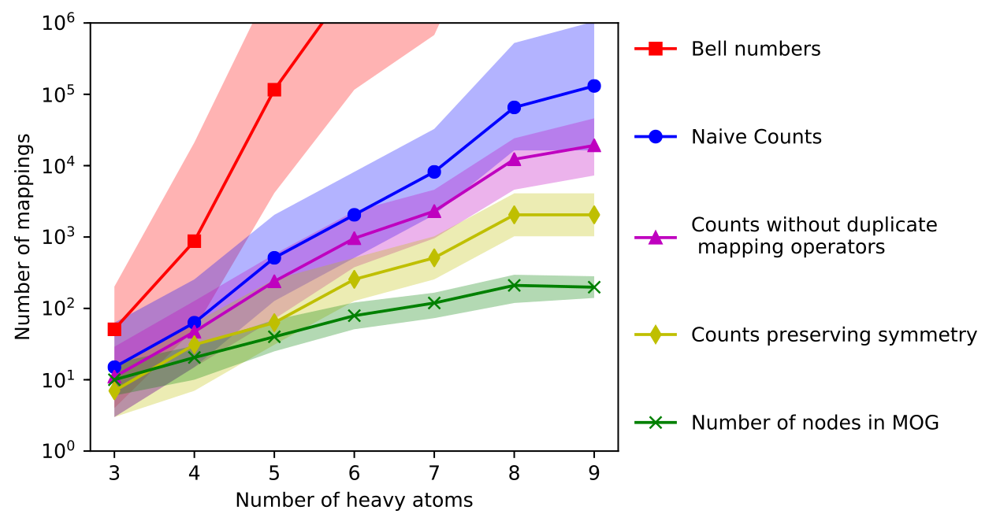
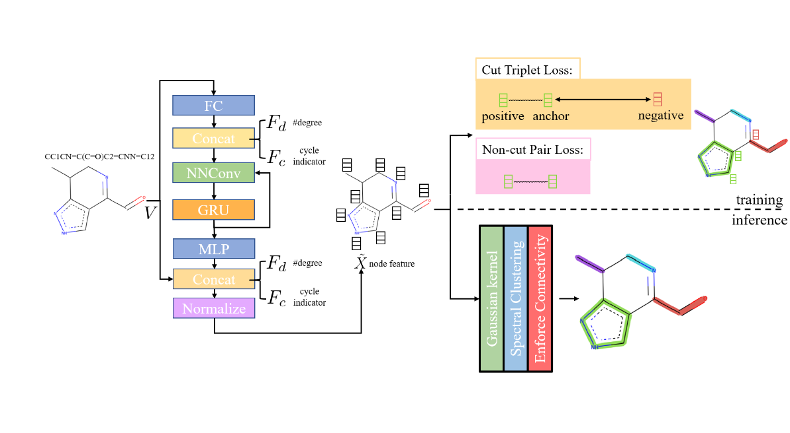
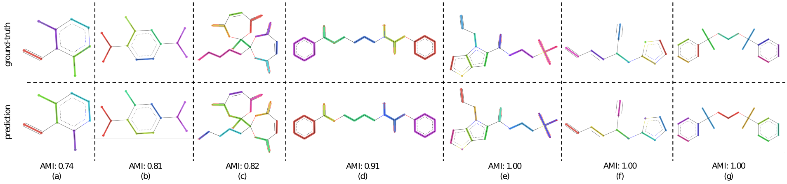

Iterative Molecular Discovery with interpretable Deep Learning
Andrew White
University of Rochester
Department of Chemical Engineering
AI2ASE (AAAI)
February, 2022
The Whitelab
Topics
- Equivariances & Representation💎
- Graph Segmentation for CG Simulation✂️
- XAI with Counterfactuals🔦
- Open Challenges🧗♀️
Brief Principles of Deep Learning for Molecules
Inductive Bias
Explicit choices made in architecture that reflect data-generation or solution space.
Inductive Bias
Explicit choices made in architecture that reflect data-generation or solution space. physics
Inductive Bias
Mol Graph

Point Cloud

Inductive Bias
Mol Graph
- atom permutation equivariance
- bond permutation equivariance
Point Cloud
- atom permutation equivariance
- translation equivariance
- rotation equivariance
Inductive Bias
Mol Graph
- atom permutation equivariance
| C | O | N | $\hat{f}(x)$ | |
|---|---|---|---|---|
| 0 | 1 | 0 | 0 | 0.3 |
| 1 | 1 | 0 | 0 | 0.8 |
| 2 | 1 | 0 | 0 | 0.1 |
| 3 | 1 | 0 | 0 | 0.0 |
| 4 | 1 | 0 | 0 | 0.0 |
| 5 | 1 | 0 | 0 | 0.0 |
| 6 | 1 | 0 | 0 | 0.2 |
| 7 | 1 | 0 | 0 | 0.5 |
| 8 | 1 | 0 | 0 | 0.9 |
| 9 | 1 | 0 | 0 | 0.6 |
| 10 | 0 | 1 | 0 | 0.3 |
Inductive Bias
Mol Graph
- atom permutation equivariance
| C | O | N | $\hat{f}(x)$ | |
|---|---|---|---|---|
| 3 | 1 | 0 | 0 | 0.0 |
| 1 | 1 | 0 | 0 | 0.8 |
| 2 | 1 | 0 | 0 | 0.1 |
| 0 | 1 | 0 | 0 | 0.3 |
| 4 | 1 | 0 | 0 | 0.0 |
| 5 | 1 | 0 | 0 | 0.0 |
| 6 | 1 | 0 | 0 | 0.2 |
| 7 | 1 | 0 | 0 | 0.5 |
| 8 | 1 | 0 | 0 | 0.9 |
| 9 | 1 | 0 | 0 | 0.6 |
| 10 | 0 | 1 | 0 | 0.3 |
Inductive Bias
Example
Point Cloud
- atom permutation equivariance
- translation equivariance
- rotation equivariance
Representation and Model Decisions
SMILES
CCCC1=CC=CC=C1C(=O)
N2CCCC[C@H]2C3CCCC3
Sequence Network
(1D Conv, RNN, Transformer)
Mol Graph
Graph Neural Networks
Points
Equivariant Neural Networks
Representation and Model Decisions
SMILES
Preferred
Mol Graph
If you must
Points
Avoid
The Power of Text
Text is excellent at predicting scalars — invariant to permutations.* Training is fast, implementations are easy, available in javascript🚀
Graph Segmentation for CG Simulation✂️
Li, Z. et al. Graph neural network based coarse-grained mapping prediction (2020).
Molecular Dynamics History
Extrapolating
| Year | Event |
|---|---|
| 2023 | The first simulation of every atom in a ribosome for 10 milliseconds |
| 2038 | The first simulation of every atom in a virus for 1 second |
| 2131 | The first simulation of every atom of a cell for 1 hour |
| 2191 | We can simulate every atom of every cell in a heart for 1 heartbeat |
| 2227 | Every atom of every cell in a human brain can be simulated as fast they move in a human brain |
Coarse-grained modeling
Remove degrees of freedom that are unnecessary to model the physics.
Little Work or Theory
\[ R^{\textrm{FG}} \rightarrow R^{\textrm{CG}} \]Excellent Theory
\[ U\left(R^{\textrm{FG}}\right) \rightarrow U\left(R^{\textrm{CG}}\right) \]Enumerating Mapping Operators
Can we make this a supervised problem?
2,000 Expert Generated Mappings

Humans agree about 90% of the time
Equivariances
- Bond permutation equivariant
- Atom permutation equivariant
Use Gated Graph Neural Network
Graph Neural Network + Spectral Clustering
Results
| Method | AMI | Cut Prec. | Cut recall | Cut F1-score |
|---|---|---|---|---|
| GAP | 0.33 | 0.47 | 0.73 | 0.54 |
| Graclus | 0.45 | 0.58 | 0.81 | 0.65 |
| ClusterNet | 0.52 | 0.64 | 0.62 | 0.58 |
| METIS | 0.56 | 0.63 | 0.56 | 0.58 |
| Cut Cls. | 0.67 | 0.75 | 0.73 | 0.73 |
| Spec. Cluster. | 0.73 | 0.75 | 0.75 | 0.75 |
| (Ours) | 0.79 | 0.80 | 0.80 | 0.80 |
| Human | 0.81 | 0.81 | 0.81 | 0.81 |
XAI with Counterfactuals🔦
Wellawatte, G. P., Seshadri, A. & White, A. D. Model agnostic generation of counterfactual explanations for molecules. (2021).
What is an explanation of a prediction?
- Justification: reasoning for using a prediction, like test error
- Interpretability: "the degree to which an observer can understand the cause of a decision"
- Explanation: a presentation of information intended for humans that give the context and cause for a prediction
Instance Explanations
- Feature Explanation: which features contributed most to outcome?
- Contrastive Explanation: what would the outcome be if the features were different?
- Counterfactual Explanation: what are the closest features with a different outcome?
Counterfactual
My grant proposal was rejected from NSF. If I had correctly formatted my references, it would have been funded.
Chemistry Counterfactual

Counterfactuals are solution to optimization. Given prediction $x,\hat{f}(x)$, find $x'$ with
\begin{aligned} \texttt{minimize}&\quad d(x, x')\\ \texttt{such that}&\quad \hat{f}(x) \neq \hat{f}(x') \end{aligned}
Challenging because optimization requires $\nabla_x\hat{f}(x)$
Use STONED Method to enumerate chemical spcae

Output

pip install exmol